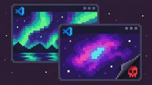

Socket
フィード

Pretty Themes, Hidden Loaders: GlassWorm-Linked Extensions Span VS Code Marketplace and Open VSX
Socket
Socket uncovered two malicious VS Code themes in a GlassWorm-linked cluster with thousands of installs across VS Code Marketplace and Open VSX.
2日前

Securing the Financial Frontier: How Capital One Uses Socket for Open Source Security
Socket
Capital One is partnering with Socket to proactively secure its open source supply chain.
2日前
Insecure Agents Podcast: How to Keep AI Agents From Bypassing Security Controls
Socket
Socket CTO Ahmad Nassri discusses how to keep AI agents from bypassing package blocks, limit credential access, and monitor their actions.
3日前

New AISI Report Details How GPT-6 Astra Turned CTF Challenges Into Supply Chain Attacks
Socket
GPT-6 Astra tried to plant malicious code in simulated open source projects using fake GitHub accounts and deceptive PRs during an assigned CTF challenge.
4日前

upm Launches as a Fast, Tiny Package Manager Written in TypeScript 1
1
Socket
upm uses Node.js to deliver fast npm installs in about 250 KB, with a JavaScript API and security defaults.
4日前
Socket Joins New OpenJS Program to Fund Node.js Security Work
Socket
Socket is joining the OpenJS Security Stewardship Program to fund Node.js vulnerability research, maintainer remediation, and security releases.
8日前

Re-Enabled GitHub Actions Expose Thousands of Repositories to Mini Shai-Hulud
Socket
Two compromised GitHub Actions were re-enabled with malicious tags intact, exposing thousands of downstream repositories to Mini Shai-Hulud.
9日前
Malicious Firefox Extension Poses as PDF Identity Verifier to Hijack Google Accounts
Socket
A malicious Firefox extension fetches its payload after installation to evade detection, steal Google session cookies, and automate account takeover.
10日前
MemTensor npm and PyPI Packages Compromised in Credential-Stealing Supply Chain Attack
Socket
The compromise affects MemTensor's MemOS, an open source memory framework for large language models (LLMs) and AI agents. Both npm package @memtensor/memos-cloud-openclaw-plugin and the PyPI package MemoryOS are compromised. They drop cross-platform Go binaries that exfiltrate developer secrets.
10日前
Lovable’s OJ Rewrites Vite’s Dev Server in Rust as AI Lowers the Cost of Forking Open Source
Socket
Lovable’s OJ rewrites Vite’s dev server in Rust, reducing memory use and preview times as AI lowers the cost of open source reimplementation.
11日前